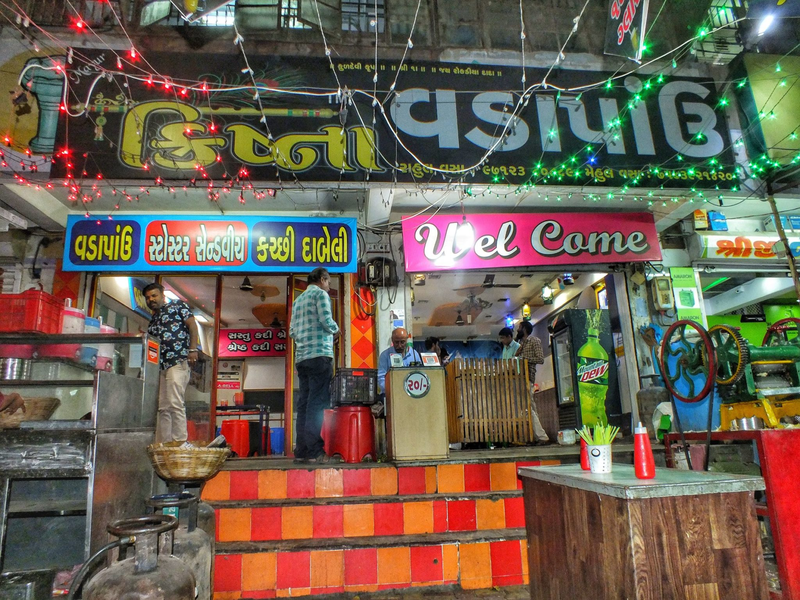

Hello Guys, greeting from the foodies on street team. we are going to talk about one old and famous Food stall which we have been referred by one of our Instagram friends. The stall is located near Thakkarbapa Nagar Approach Ahmedabad. The stall name is Krishna Vada Pav. Krishna Vada Pav is a very old shop here and also very famous. and they also sell Kachhi Dabeli. so let's get into it and talk about it.
Vada Pav
The special thing about their vada pav is that they sell simple vada pav without using pan or oil. They sell vada pav like a Mumbaikar style.they just simply cut the pav and put vada inside the pav. There is a crowd of people here in the evening so we had to wait for our Vadapav. The taste was Spicy and he served this Vadapav with red sauce and green kadhi. They give Mirch Pakoda for salad, which is very good and unique. we hope you will like it so whenever you get a chance to visit there please do and let us know your opinion.
So, guys, we hope you enjoyed our article and if you want to Best Vada Pav near Bapanagar do visit there.
Location- Thakkarbapa Nagar, Near bramhani Mata mandir , Lilanagar BRTS Bus stop, Ahmedabad
Hello Guys, welcome back to the foodies on street, we wish you a great and healthy happy new year in advance. So today's article is something special, we are going to tell you about a very special place which is kind of different in its own. When everybody is busy visiting famous places, high end restaurants, this place is missing its spotlight so we thought to let you know about this lovely place the Jail Bhajiya House. They serve delicious hot Methi Gotas, Mirchi and Onion Bhajiyas and Aloo Gotas.
As you have got it from the name the Jail Bhajiya House stands special on its own, the endless hours of work, efforts, dedication and love can change an individuals life story (comes with lot's handwork and day dedication). The Bhajiya House is located near RTO Ahmedabad and it was established back in 1998 and all kinds of bhajiyas are made by the Jail Inmates. If you want to see a crowd of Amdavadis we suggest you go there in weekend mornings, this place would be full of people we tell you. it's been 20 years but the place remains the same and special for amdavadis. So the 20 years of glory, love and happiness of the place makes it special.
The Jail Inmates wake up early in the morning to start the show. To be the part of the Jail Bhajiya House team is a difficult task. They are selected by their own process of the Jail Authorities. They work really hard to serve the tasty hot Bhajiyas everyday. Jail Inmates divided into three teams which changes every month and they are also geting fair reimbursement according to their work and skills. The team works according to their daily schedule which is pre-decided.
The Jail Bhajiya House is a successful food joint of its own if we compare it to other food stalls or food joint and there is no secret ingredient or any kind of special masala but still it tastes so damn good!! . When we asked one of the inmates about the preparation he said all the inmates who are involve in it work on the routine schedule. They work hard to do it perfectly with no interruption in the process while maintaining the quality of bhajiyas, he also added that all the inmates are friendly to each other and Bhajiya House is build on trust and hard work which remains same for more than 20 years.
So guys this is it we hope you really liked our article and please share it with your friends and family. We are looking forward to see you there.
Location- Subhash Cir, Sastri Nagar, Hridaya Kunj, Old Wadaj, Ahmedabad, Gujarat 380027
Hello Guys, welcome back to the foodies on street we hope you all are doing well. So today we are going to tell you about a unique panipuri we had near Maninagar Ahmedabdad. Stall is owned by a very lovely lady named Varsha Trivedi, She is serving this awesome panipuris for more than 5 years and she is so amazing, very lovely in nature and so humble. I think this kind of people make our day when we see them, a big smile on face and kind person. Okay so let's get into the thing which we discuss every time (what we had !!).
So guys this is kind of unique variety that we found so far we usually had Chinese food like like noodles, soup etc but Chinese Panipuri this one is different. So basically it served with Chinese taste panipuri and that's why it is called Chinese panipuri. Tasty, mouthwatering Chinese panipuri is a best treat for your loved ones. Guys believe us it taste so so good that you couldn't resist yourself to have it more and more. We bet you will definitely like this Indo-Chinese Stuff, please do visit there and try it at least once. In addition just for the reference you can also try Regular Panipuri, Lasan Panipuri, sweet one and extra spicy for spicy food lovers and more on to it there is a special panipuri for Pregnant Women and little kids. Guys do check out this amazing stall.
So all the panipuri lovers out there and want to try something new in panipuri this is foodies on street's recommendation. Do visit there and help them to grow.
Location - Opposite Havmor Restaurant Nr. Canara Bank, LG Bridge Corner, Maninagar, Ahmedabad, Gujarat 380008
Please write down your opinion in the comment box and please follow us on Pinterest and Instagram for more Street food updates and below is the map direction for your reference. Also, do check out our previous posts
{kind=link}
{kind=link}
{kind=link}
{kind=link}
{kind=link}
{kind=link}